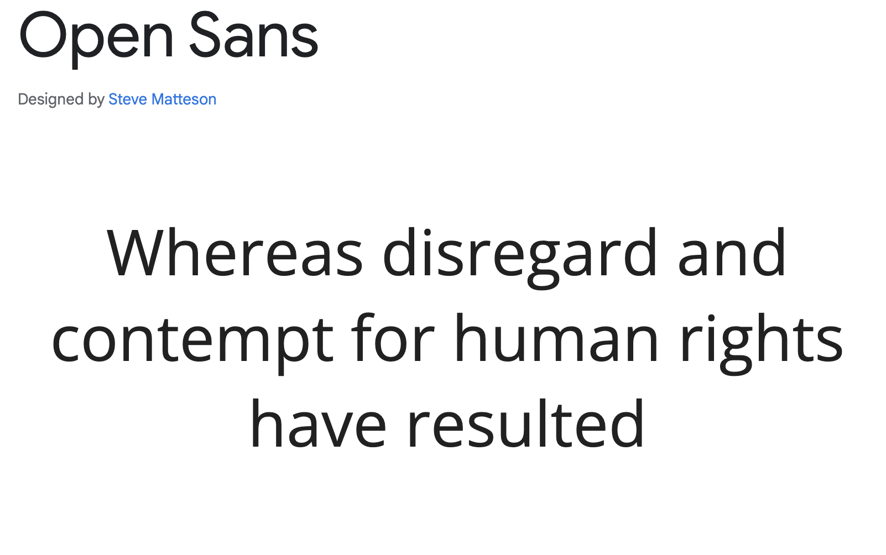
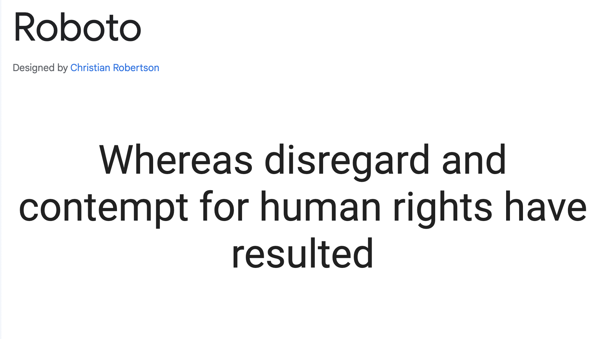

Color Schema
Colors for my website are:

Soft black will be used for the text in the body
Grey will be us for the header and the footer
Dark blue-gray be used for special text and words or parts that needs emphasis
Typography
Open Sans Font Style
This will be used for the main body
Roboto Font Style
This will be used for my header and footer